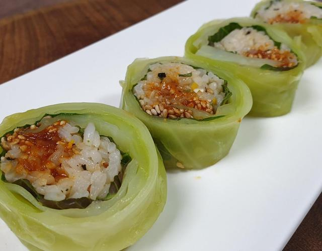
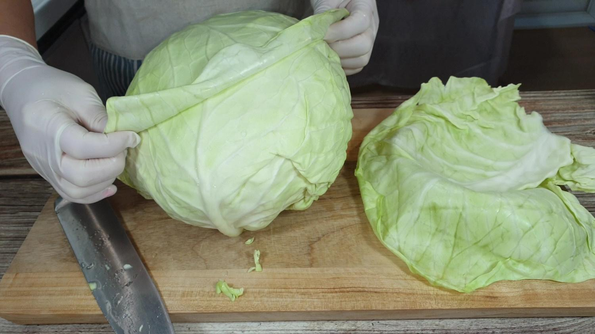
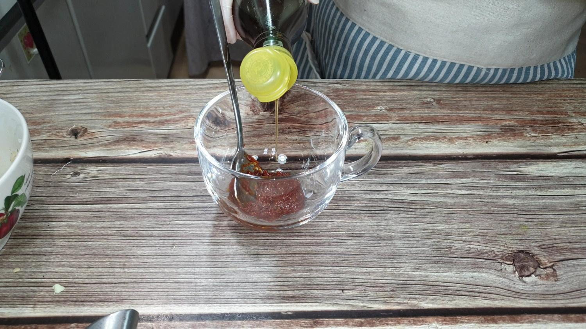
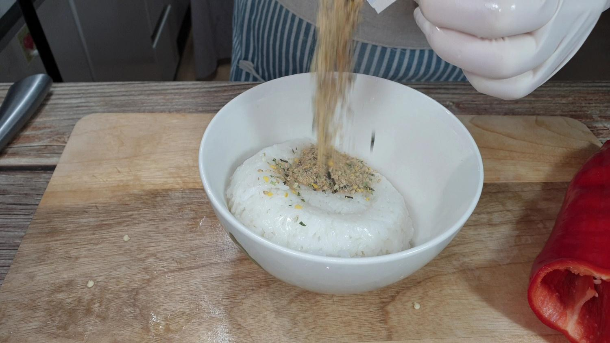
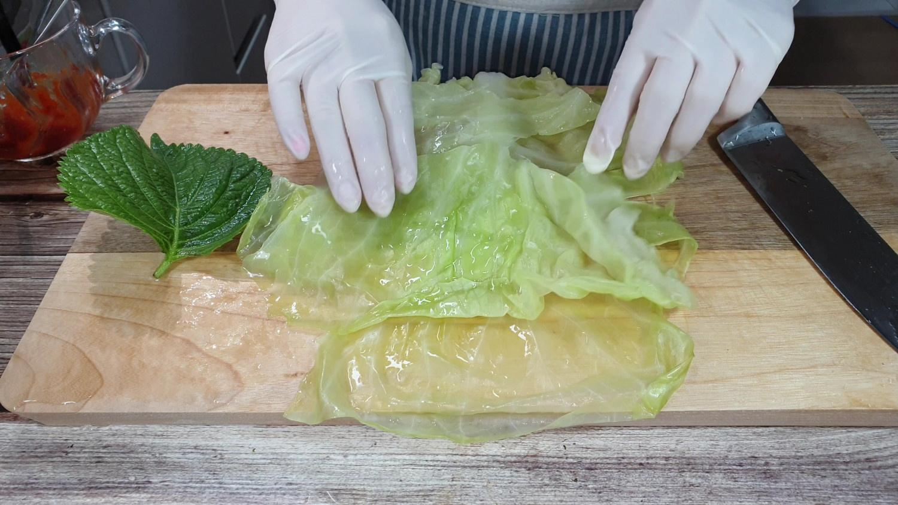
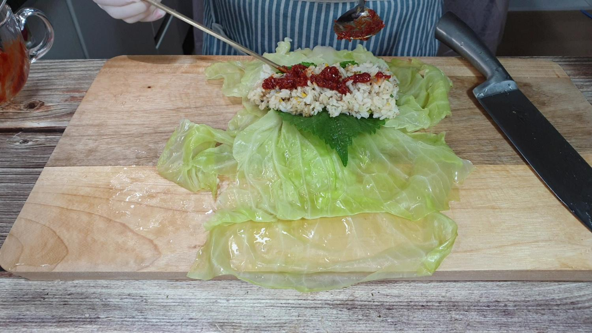
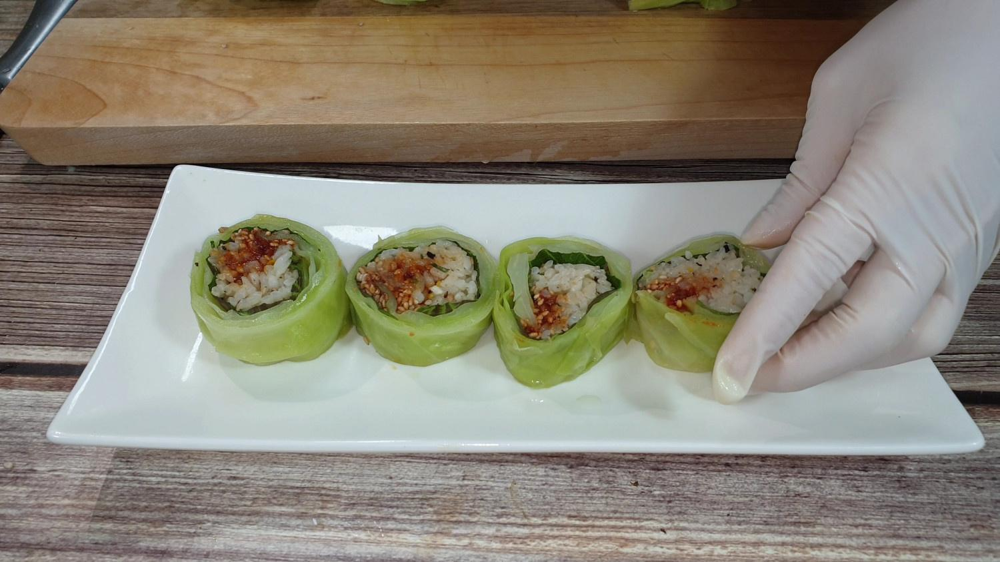

RECIPE TIP
양배추를 한장씩 뗘내기 어렵다면 밑둥을 충분히 자른 후,
밑둥 부위부터 한장씩 뗘냅니다.
쌈장을 조금 넣으셨다면, 접시에 담고 밥위에 쌈장을 더 올립니다.

STEP.1
양배추는 밑둥을 자르고 찢어지지 않게 한장씩 뗘서 찜기에 쪄요.

STEP.2
쌈장에 참기름 또는 들기름을 넣고 섞습니다.

TEP.3
밥에 주먹밥용토핑 한봉과, 참기름, 깨를 넣고 섞어요.
(주먹밥용 토핑이 없다면 소금으로 대체 합니다)

STEP.4
양배추의 찢어진 부분이 있다면, 위에 더 깔아줍니다.

STEP.5
깻잎도 한장 깔고, 그위에 밥을 올린 후 쌈장을 올립니다.
양배추가 두겹이라면 쌈장은 충분히 넣어줍니다.

STEP.6
김밥 자르듯이 자른 후 접시에 담고 깨를 뿌려 완성합니다.